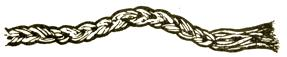

"Poppy George" Plitt graduated from college with a degree in agriculture in 1932. During the years that followed he made a good many friends and a name for himself (as a gentleman, inventor, and executive) in the field of bird and animal husbandry and care. At various points in his career, Mr. Plitt served as Director of Nutritional Research and Field Services for two of the East's larger grain mills. He is also the originator of Pride of the Valley Wild Bird Food and Kleen Kitty cat litter. Mr. Plitt now raises and trains standardbred horses and keeps a wide variety of other birds and animals on a New York farm.
"Poppy George" is now sharing his experience by giving MOTHER's readers down-to-earth advice on the care and feeding of homestead livestock. Ouestions should be mailed to Mr. George Plitt, Happiness Hills Farms, RD 3, Addison, N. Y. 14801.
QUESTION: My wife and I are buying some acreage in the northern "neck" of Virginia and expect to move there sometime this year. We like the area very much . . . except for the ticks, which have bothered us a great deal on several occasions. I seem to be allergic to their bites and react to each one with weeks of severe itching. My Virginia friends tell me they have a lot of tick problems with their dogs and other animals. Do you know of any non-toxic repellent for these pests, or any way to remove one after it becomes attached (without causing its head to remain in the skin)?
ANSWER: Ticks can be a royal pain in the neck (and in other places too) for both animals and people. My experience with repelling the creatures has given no consistent results . . . but I have had fabulous luck with removing them from animals and humans-myself included-by means of a drop or two of oil of camphor applied directly on each intruder with a medicine dropper. You'll find that the oil kills the tick, which usually comes out intact (head and all). Please do not pull off the pests once they're attached, because the head breaks loose and severe itching and infection often follow.
QUESTION: Poppy, I have a goat, a calf, and a cow . . . and, since I'm without a fenced pasture, I must stake the animals out to graze and tie them when they're inside my "barn". The goat and calf chew the rope ties, break loose, and get into trouble. Chains are so expensive that I just can't afford them now. What solution can you suggest?
ANSWER: If you're feeding your stock baled hay fastened with twine-not wire-ties, save the string . . . or you may be able to get a supply from a local farmer with a large operation. He'll probably be glad to give you the ties gratis, since they're a headache to dispose of. Take 6 to 12 strands, attach them to a snap (with a swivel), and braid them into a rope. You can make the rope as long as you wish. Then fasten a piece of wire to the end opposite the snap and use the metal to pull the cord through a length of old rubber or plastic hose (half-inch or larger in diameter). This makes a durable, long-lasting tie for indoor or outdoor use. If you're handy, incidentally, you can use the 12-strand braid to fabricate halters for calves, cows, horses, or goats.
QUESTION: I have a few dairy goats and a cow. Must they be fed different diets?
ANSWER: Cattle and dairy goats can thrive on basically the same rations. For instance, both can handle roughage feeds such as pasture, silage, hay, sugar beets, and many other root crops (besides most garden refuse that's free of chemical residues). Milk production, however, does require a diet containing 12 to 14 percent crude protein. Quality alfalfa hay is excellent for both animals, and a good grain ration should be fed by the following rule of thumb: one pound of grain for each three pounds of milk produced. This allowance should be divided between morning and evening feedings.
Successful animal husbandry depends in part on a knowledge of disease and its management. If you're on your toes, you can spot sickness in its initial stages . . . when you have the best chance of dealing with it successfully. In future issues I intend to describe some simple signs that indicate when livestock or poultry are going out of condition. Let's start with the following note on illness in calves.
I recommend that you invest a dollar or two in a veterinary thermometer and take the rectal temperature of any animal that doesn't look "just right". Do this at the first indication of ill health. I affix a short bit of string to the glass eyelet at the top of the instrument and tie the other end to a spring-type wooden clothespin. After inserting the bulb, I clip the pin to a portion of the patient's tail. This is a very useful addition in case of a restless beast or one that expels the thermometer or knocks it out of your hand.
A calf's normal temperature can and does vary from 100° to 101° F. An excited youngster can give a reading of 102° to 102-1/2° F. In my experience, a temperature over 103° means trouble. Pneumonia cases of long duration may produce a lingering fever in the 102°-103° range. A drop below 99° usually indicates that the animal is not responding to your treatment and is going to leave you.
I use aspirin to get a sick calf's temperature down. An alcohol sponge bath is also helpful, but the patient should be rubbed briskly at the same time, covered promptly with a blanket, and kept in a draft-free area if possible.
|
|
 |
|